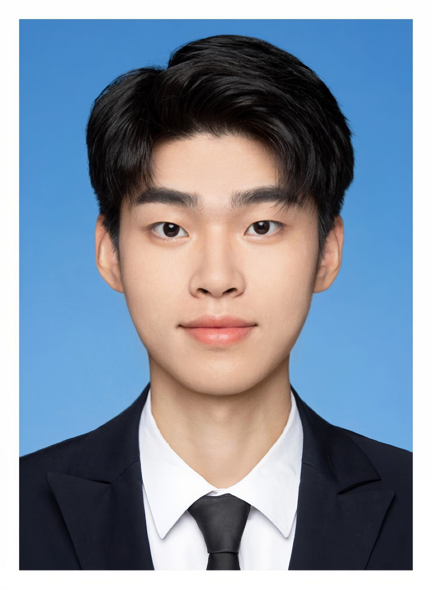
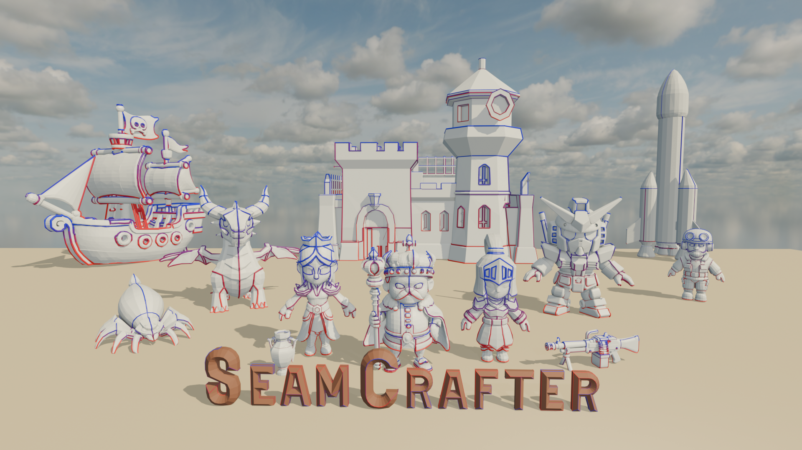
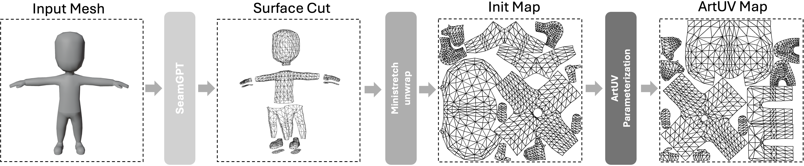
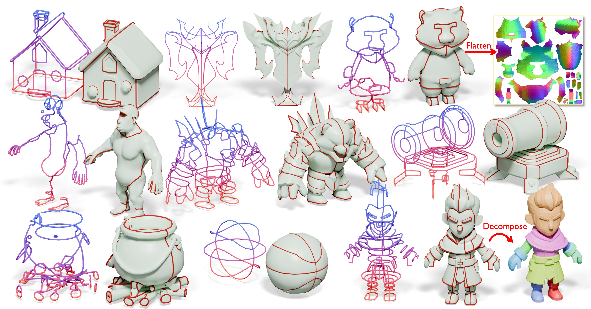

Contact
chenyg59@mail2.sysu.edu.cn
github.com/chenyg59
Google Scholar
I am a second-year Master student in the School of Computer Science, Sun Yat-sen University (SYSU), advised by Prof. Dongyu Zhang. I received my Bachelor’s degree from the School of Aeronautics and Astronautics, Sun Yat-sen University. My research interests include 3D generation, 2D diffusion-based image generation, 3D Gaussian Splatting , and computer vision tasks for aerospace applications.
Education
- 2024 – Present: M.Sc. in Computer Science, Sun Yat-sen University, School of Computer Science
- 2020 – 2024: B.Eng. in Aerospace Engineering, Sun Yat-sen University, School of Aeronautics and Astronautics
Research Experience
-
Apr. 2025 – Present: Research Intern,
Tencent Hunyuan
Research on autoregressive models for 3D content generation -
Dec. 2024 – Apr. 2025: Research Intern,
Math Magic
Controllable 2D image generation with diffusion models -
May. 2024 – Dec. 2024: Research Intern,
Sensetime
Feed-forward 3D Gaussian Splatting for efficient 3D reconstruction -
Aug. 2023 – May. 2024: Research Intern,
Double Tailed Comet
Applications of 2D image generation and video generation models
Research

Hunyuan3D Studio: End-to-End AI Pipeline for Game-Ready 3D Asset Generation
Yuguang Chen is one of the core contributors of Semantic UV
Technical Report
[PDF] [Project Page]
Yuguang Chen is one of the core contributors of Semantic UV
Technical Report
[PDF] [Project Page]

SeamCrafter: Learning UV-Friendly Mesh Seams from Point Clouds with Preference Optimization
Duoteng Xu*, Yuguang Chen*, Jing Li, Xinhai Liu, Zhuo Chen, Dongyu Zhang, Chunchao Guo
arXiv 2025
[PDF] [Project Page]
Duoteng Xu*, Yuguang Chen*, Jing Li, Xinhai Liu, Zhuo Chen, Dongyu Zhang, Chunchao Guo
arXiv 2025
[PDF] [Project Page]

ArtUV: Artist-style UV Unwrapping
Yuguang Chen, Xinhai Liu, Yang Li, Victor Cheung, Zhuo Chen, Dongyu Zhang, Chunchao Guo
arXiv 2025
[PDF] [Project Page]
Yuguang Chen, Xinhai Liu, Yang Li, Victor Cheung, Zhuo Chen, Dongyu Zhang, Chunchao Guo
arXiv 2025
[PDF] [Project Page]

Auto-Regressive Surface Cutting
Yang Li, Victor Cheung, Xinhai Liu, Yuguang Chen, Zhongjin Luo, Biwen Lei, Haohan Weng, Zibo Zhao, Jingwei Huang, Zhuo Chen, Chunchao Guo
arXiv 2025
[PDF] [Project Page]
Yang Li, Victor Cheung, Xinhai Liu, Yuguang Chen, Zhongjin Luo, Biwen Lei, Haohan Weng, Zibo Zhao, Jingwei Huang, Zhuo Chen, Chunchao Guo
arXiv 2025
[PDF] [Project Page]